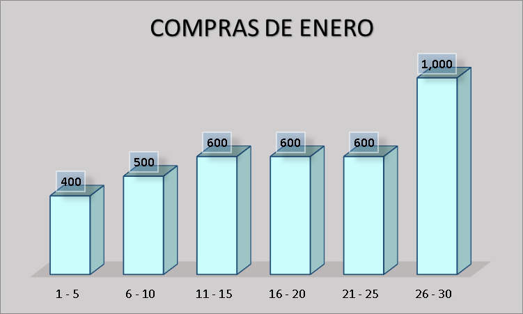
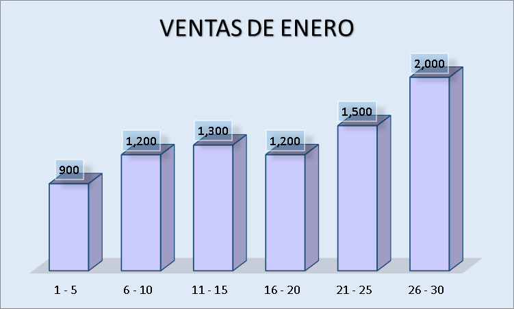

Registro de Compras
| Intervalo (días) | Descripción | Monto (S/) |
|---|---|---|
| 1 - 5 | Insumos básicos: harina, azúcar, levadura | 400 |
| 6 - 10 | Reposición de empaques y materias primas | 500 |
| 11 - 15 | Productos perecibles: leche, huevos, etc. | 600 |
| 16 - 20 | Insumos adicionales y mantenimiento menor | 600 |
| 21 - 25 | Materia prima variada: chocolate, rellenos, frutas | 600 |
| 26 - 30 | Insumos finales + Pago del préstamo (S/ 500) | 1,000 |
| Total Compras | 3,700 | |

Registro de Ventas
| Intervalo (días) | Descripción | Monto (S/) |
|---|---|---|
| 1 - 5 | Ventas iniciales de productos variados | 900 |
| 6 - 10 | Promociones de productos dulces | 1,200 |
| 11 - 15 | Encargos especiales: tortas y postres | 1,300 |
| 16 - 20 | Pedidos para eventos y ventas regulares | 1,200 |
| 21 - 25 | Productos de temporada (ofertas) | 1,500 |
| 26 - 30 | Incremento de pedidos por fin de mes | 2,000 |
| Total Ventas | 8,100 | |

Resultado del Análisis
Tras analizar los datos, se observa que:
Total Compras: S/ 3,700
Total Ventas: S/ 8,100
Esto genera un margen bruto de S/ 4,400.
Del monto de S/ 1,000 en el último intervalo, S/ 500 se destinan al abono mensual del préstamo, lo que reduce la deuda de S/ 5,000 a S/ 4,500.
En conjunto, el margen obtenido es suficiente para cubrir gastos operativos y generar una rentabilidad que respalda la viabilidad del negocio.